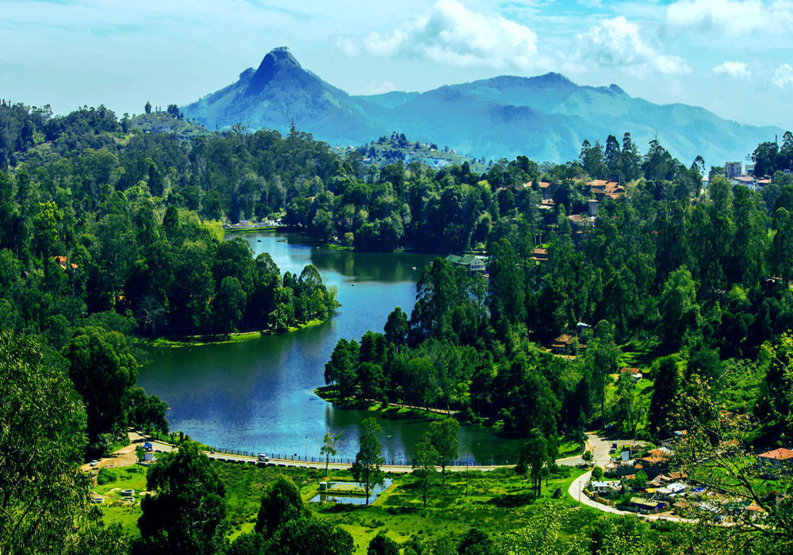
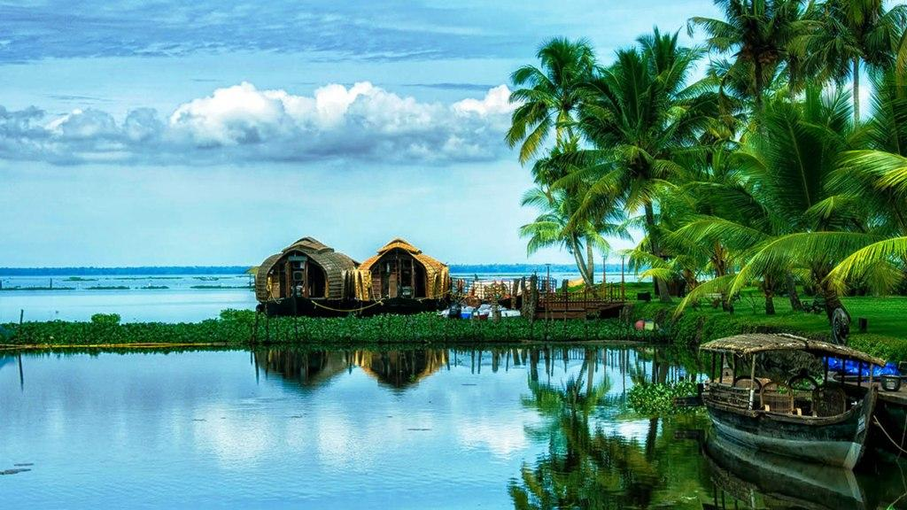

TAMIL NADU
Kodaikanal Lake that lays in the heart of Kodaikanal, is a star-shaped man-made lake that is draped on an area of 60 acres. Boating, horse riding, cycling and angling are a few of the adventure activities tourists can appease themselves with, near the lake.
KERALA
Malampuzha Dam is the second largest dam and reservoirs in Kerala,[2] located near Palakkad, in the state of Kerala in South India, built post independence by the then Madras state. Situated in the scenic hills of the Western Ghats in the background it is a combination of a masonry dam with a length of 1,849 metres
KARNATAKA